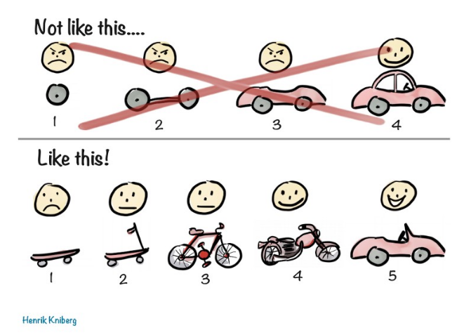
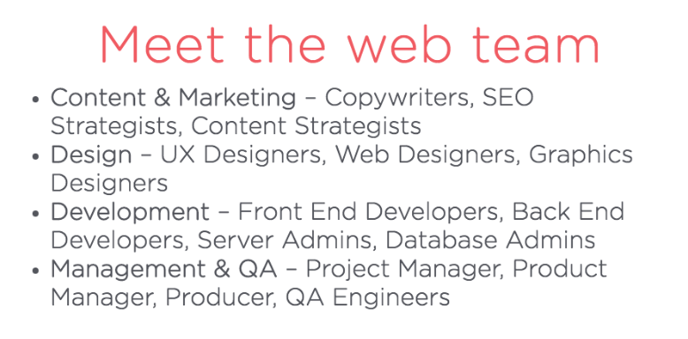
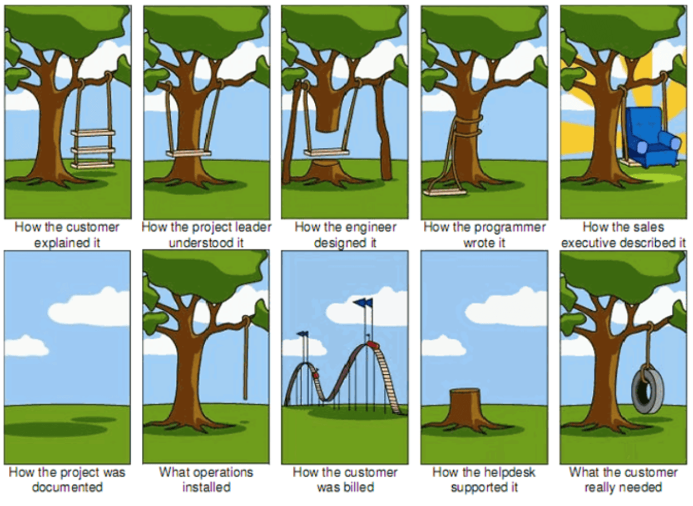

The Tech Inclusive Nonprofit

AnnieCannons

Student Projects
Tools built by the stakeholders/users themselves
TRO_Express
Top 5 Things a Nonprofit Should Know About Developing Technology
1. Feasibility
- User personas
- Behavior change
- Will your staff, clients, partners use this? What are people already using?

2. Research
- What already exists?
- What do you need to build specifically for yourself?
- What privacy security concerns exist?
- When will it be useful?
- What information or data sets does it rely on?
- Uber example
3. MVP and Iteration
MVP
The minimum viable product: the product that effects the fewest number of functions that meet a core product goal.
Getting to this is hard
MVP
Iterating
Take one step at a time. Build one function at a time. Succeed with that function before moving to the next. Build tools that rely upon one another in a logical order.
4. How to communicate with developers
Who makes up a tech company?
aka: Who should I be talking to?
What are we trying to avoid?
Why are clear instructions important?
The Software Development Lifecycle (SDLC)
Software Development Life Cycle (SDLC), in systems engineering and software engineering refers to the process of creating or altering systems, and the models and methodologies that people use to develop these systems.
Sprints
How to contract with developers
Timelines
Always leave time between testing and the planned launch date. Why?
- Developers need time to fix bugs.
- Once things are fixed, they need to be tested again.
- The last thing you test could be the biggest problem.
- Client review.
Budgeting Ballparks
THE END
Thank you for your attention!
laura@anniecannons.com